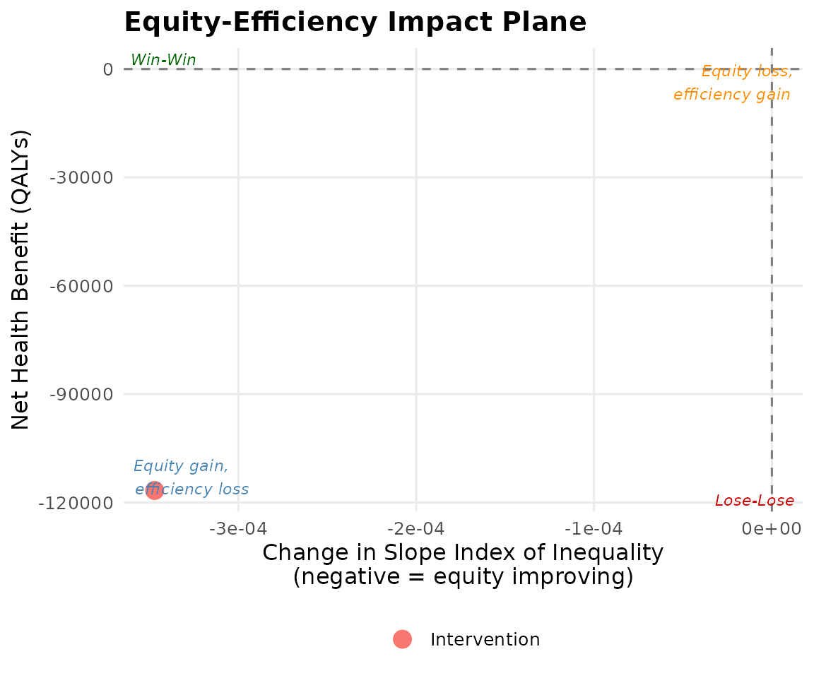

International Applications of DCEA
Source:vignettes/v07_international_applications.Rmd
v07_international_applications.RmdCanada (CADTH workflow)
CADTH uses income quintile stratification. Use
country = "canada" to access the preloaded Statistics
Canada HALE data.
canada_baseline <- get_baseline_health("canada", "income_quintile")
canada_baseline
#> # A tibble: 5 × 12
#> income_quintile group quintile_label group_label mean_hale mean_hale_male
#> <int> <int> <chr> <chr> <dbl> <dbl>
#> 1 1 1 Q1 (lowest income) Q1 (lowest… 62.4 60.8
#> 2 2 2 Q2 Q2 65.1 63.6
#> 3 3 3 Q3 Q3 67.3 65.9
#> 4 4 4 Q4 Q4 69.4 68.1
#> 5 5 5 Q5 (highest income) Q5 (highes… 71.8 70.5
#> # ℹ 6 more variables: mean_hale_female <dbl>, se_hale <dbl>, pop_share <dbl>,
#> # cumulative_rank <dbl>, year <int>, source <chr>
result_ca <- run_aggregate_dcea(
icer = 50000, # CAD/QALY
inc_qaly = 0.40,
inc_cost = 20000,
population_size = 8000,
baseline_health = canada_baseline,
wtp = 50000,
opportunity_cost_threshold = 30000
)
summary(result_ca)
#> == Aggregate DCEA Result ==
#> ICER: £50,000 / QALY
#> Incremental QALY: 0.4000
#> Incremental cost: £20,000
#> Population size: 8,000
#> Net Health Benefit: -2133.33 QALYs
#> SII change: -0.0000
#> Decision: Trade-off: equity gain, efficiency loss
#>
#> -- Per-group results --
#> # A tibble: 5 × 4
#> group_label baseline_hale post_hale nhb
#> <chr> <dbl> <dbl> <dbl>
#> 1 Q1 (lowest income) 62.4 62.3 -427.
#> 2 Q2 65.1 65.0 -427.
#> 3 Q3 67.3 67.2 -427.
#> 4 Q4 69.4 69.3 -427.
#> 5 Q5 (highest income) 71.8 71.7 -427.
#>
#> -- Inequality impact --
#> # A tibble: 4 × 5
#> index pre post change pct_change
#> <chr> <dbl> <dbl> <dbl> <dbl>
#> 1 sii 11.6 11.6 -1.24e-14 -1.08e-13
#> 2 rii 0.172 0.172 1.37e- 4 7.94e- 2
#> 3 gini 0.0275 0.0275 2.18e- 5 7.94e- 2
#> 4 atkinson_1 0.00119 0.00119 1.89e- 6 1.59e- 1WHO regional analysis
For global health or multi-country analyses, use WHO regional HALE data.
who_baseline <- get_baseline_health("who_regions")
who_baseline
#> # A tibble: 6 × 10
#> who_region region_label group group_label mean_hale se_hale pop_share
#> <chr> <chr> <int> <chr> <dbl> <dbl> <dbl>
#> 1 AFR African Region 1 African Re… 53.8 1.2 0.163
#> 2 AMR Region of the Americ… 2 Region of … 66.1 0.8 0.13
#> 3 SEAR South-East Asia Regi… 3 South-East… 60.3 0.9 0.271
#> 4 EUR European Region 4 European R… 68.9 0.6 0.147
#> 5 EMR Eastern Mediterranea… 5 Eastern Me… 59.4 1 0.088
#> 6 WPR Western Pacific Regi… 6 Western Pa… 68.3 0.7 0.201
#> # ℹ 3 more variables: cumulative_rank <dbl>, year <int>, source <chr>
result_who <- run_aggregate_dcea(
icer = 1000,
inc_qaly = 0.35,
inc_cost = 350,
population_size = 500000,
baseline_health = who_baseline,
wtp = 1000,
opportunity_cost_threshold = 600
)
plot_equity_impact_plane(result_who)
Custom country workflow
For countries without preloaded data, supply your own baseline:
custom_baseline <- tibble::tibble(
group = 1:4,
group_label = c("Poorest quartile", "Q2", "Q3", "Richest quartile"),
mean_hale = c(55.0, 60.0, 65.0, 70.0),
se_hale = c(0.8, 0.7, 0.6, 0.5),
pop_share = rep(0.25, 4),
cumulative_rank = c(0.125, 0.375, 0.625, 0.875),
year = 2022L,
source = "Custom country data"
)
result_custom <- run_aggregate_dcea(
icer = 5000,
inc_qaly = 0.3,
inc_cost = 1500,
population_size = 100000,
baseline_health = custom_baseline,
wtp = 5000,
opportunity_cost_threshold = 3000
)
#> Warning in summary.lm(model): essentially perfect fit: summary may be
#> unreliable
#> Warning in summary.lm(model): essentially perfect fit: summary may be
#> unreliable
#> Warning in summary.lm(model): essentially perfect fit: summary may be
#> unreliable
#> Warning in summary.lm(model): essentially perfect fit: summary may be
#> unreliable
#> Warning in summary.lm(model): essentially perfect fit: summary may be
#> unreliable
#> Warning in summary.lm(model): essentially perfect fit: summary may be
#> unreliable
summary(result_custom)
#> == Aggregate DCEA Result ==
#> ICER: £5,000 / QALY
#> Incremental QALY: 0.3000
#> Incremental cost: £1,500
#> Population size: 100,000
#> Net Health Benefit: -20000.00 QALYs
#> SII change: 0.0000
#> Decision: Lose-Lose (efficiency loss + equity loss)
#>
#> -- Per-group results --
#> # A tibble: 4 × 4
#> group_label baseline_hale post_hale nhb
#> <chr> <dbl> <dbl> <dbl>
#> 1 Poorest quartile 55 55.0 -5000
#> 2 Q2 60 60.0 -5000
#> 3 Q3 65 65.0 -5000
#> 4 Richest quartile 70 70.0 -5000
#>
#> -- Inequality impact --
#> # A tibble: 4 × 5
#> index pre post change pct_change
#> <chr> <dbl> <dbl> <dbl> <dbl>
#> 1 sii 20 20.0 1.42e-14 7.11e-14
#> 2 rii 0.32 0.320 2.56e- 4 8.01e- 2
#> 3 gini 0.0500 0.0500 4.00e- 5 8.01e- 2
#> 4 atkinson_1 0.00402 0.00402 6.47e- 6 1.61e- 1